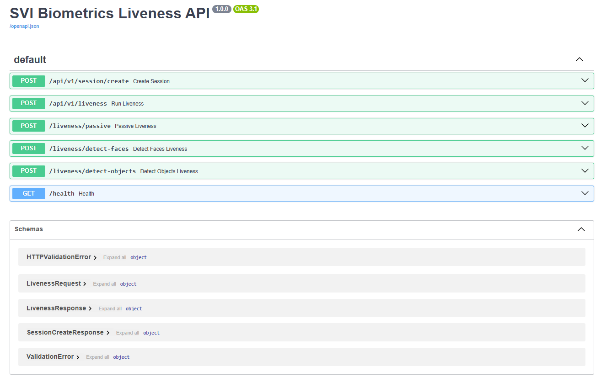

SVI = Secure Verification & Identification of Biometrics
Browser-based face liveness detection — Passive & Active
Version 1.0.0 — July 2026

SVI = Secure Verification & Identification of Biometrics
A client-side JavaScript SDK that detects whether a user is a real person (not a photo, video, or mask) using their device camera.
Single snapshot analyzed locally with MediaPipe:
Takes ~1 second
6 challenge steps the user must perform:
Takes ~13 seconds
Both return a score (0–100%) and pass/fail decision.
SviPassiveLiveness — snapshot + local scoringSviActiveLiveness — 6 challenge stepsSviLivenessCore — camera, session, API helpersdetector.ts — MediaPipe FaceLandmarker wrapperui.ts — Card UI with overlaysPOST /api/v1/session/createPOST /api/v1/livenessPOST /liveness/detect-faces (AWS)POST /liveness/detect-objects (AWS)GET /healthSDK scores client-side via MediaPipe. Backend handles sessions, audit, and cloud provider fallbacks.
Metric Max What it checks Face Size 15 Face width in frame Centering 10 Nose between ears Head Tilt 10 Eye line angle (roll) Sharpness 10 Pixel variance (blur) Brightness 5 Average luminance TOTAL 50 Pass: >= 35 (70%)
All scoring is local. No images leave the browser.
Challenge Dur. Measured Look straight 2s Stillness Blink slowly 3s Blink count Turn left 2s Yaw movement Turn right 2s Yaw movement Look up 2s Pitch movement Look down 2s Pitch movement Max: 90 pts (6 x 15) Pass: >= 63 (70%)
Step 1
Add the script tag.
Step 2
Add a container div.
Step 3
Initialize with SviLiveness.create().
<script src="svi-liveness.dev.js"></script>
<div id="svi-root"></div>
<script>
var sdk = SviLiveness.create({
backendUrl: 'http://localhost:8000',
mode: 'passive', // 'passive' | 'active'
containerId: 'svi-root',
onComplete: function(result) {
console.log('Passed:', result.passed);
console.log('Score:', result.score + '%');
console.log('Face:', result.capturedFaceBase64
? 'captured' : 'none');
},
onError: function(err) {
console.error(err.code, err.message);
},
theme: { primaryColor: '#3b82f6' },
});
sdk.start(); // begins camera + detection
</script>
SDK handles camera, UI, challenges, and scoring. No CDN or external dependencies needed.
Creates a one-time session.
// Request (Headers only, no body)
Authorization: Bearer <key>
// Response 200
{ "session_id": "uuid",
"expires_at": "2026-07-28T..." }
Returns liveness result + captured face image.
// Request
{ "mode": "active|passive",
"image": "base64...",
"session_id": "uuid",
"challenge_data": null }
// Response 200
{ "passed": true,
"confidence": 0.85,
"txn_id": "uuid",
"provider": "heuristic",
"used_fallback": false,
"captured_face": "base64...",
"error": null }
// Request: { "image": "base64..." }
// Response: { "face_detected": true,
// "confidence": 0.99,
// "eyes_open": true,
// "quality_sharpness": 0.8,
// "age_low": 25, "age_high": 35,
// "gender": "Male", "expression": "Happy" }
// Request: { "image": "base64..." }
// Response: { "has_phone": false,
// "has_screen": false,
// "has_photo": false,
// "spoof_risk": "low",
// "raw_labels": [...] }
// Response
{ "status": "ok",
"environment": "production",
"providers": { ... } }
cd backend pip install -r requirements.txt python run.py
Starts at http://localhost:8000
cd sdk python -m http.server 3000
Open http://localhost:3000/demo/
cd sdk npm install npm run build
Outputs in dist/
Tip
Open F12 console → API logs tagged [SESSION] and [LIVENESS] with full request/response payloads.
face-id-matcher/
+-- backend/
| +-- app/
| | +-- api/routes.py Endpoints
| | +-- core/session.py Session store
| | +-- core/audit.py Audit logging
| | +-- liveness/engine.py Orchestration
| | +-- liveness/providers/ heuristic, aws, open_face
| | +-- models/schemas.py Pydantic
| | +-- config.py Env config
| | +-- main.py FastAPI app
| +-- requirements.txt
| +-- run.py
| +-- Dockerfile
|
+-- sdk/
+-- src/
| +-- core.ts Base class
| +-- passive.ts Passive liveness
| +-- active.ts Active + challenges
| +-- detector.ts MediaPipe wrapper
| +-- ui.ts UI rendering
| +-- types.ts TypeScript types
| +-- index.ts SviLiveness.create()
+-- dist/ Built output
+-- demo/index.html Demo page
+-- package.json
+-- rollup.config.js
+-- tsconfig.json
Key Design Decision
The SDK does all scoring client-side using MediaPipe. The backend is for session management, audit logging, and optional cloud provider fallbacks.
No images leave the browser unless you explicitly call the API.
Tech Stack
Typed superset of JavaScript that compiles to plain JS. Used for building the SDK with type safety and modern ES features.
Google's cross-platform ML pipeline framework. Used here for real-time FaceLandmarker detection to analyze facial landmarks (eyes, nose, head pose) directly in the browser.
Module bundler that compiles the TypeScript SDK into a single self-contained JavaScript file (svi-liveness.js) with tree-shaking for minimal bundle size.
Python async web framework for session management, audit logging, and routing requests to cloud providers (AWS, OpenFace).
Cloud provider for optional Rekognition (face/object detection), Kinesis Video Streams (video ingestion), and RDS/PostgreSQL (session storage & audit).
Identity verification for the modern web
Privacy-first — no images leave the browser
Powered by SVI
Built by Kevin G. Vega